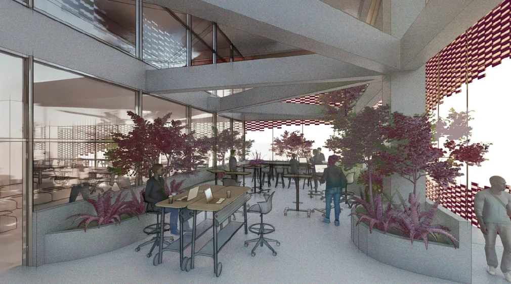

Academic work · Architecture studio
Studio Catalyst
An office proposal for a former petrol station on Old Street opens the ground floor to the public and brings light to the street after dark.

- Location
- Old Street, London
- Context
- Hochschule München · Architecture studio
- Term
- Winter 2023/24
The drawing
The diagrams and plans trace how the proposal organizes the office spaces around a public ground level.
 Enlarge drawing
Enlarge drawing
The space
The interior view brings the proposed shared areas down to the scale of the people using them.
